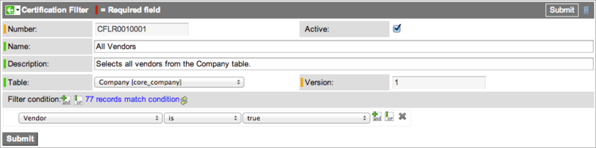
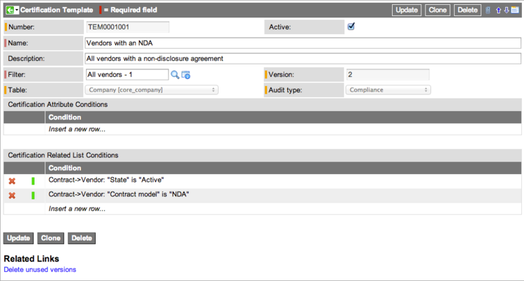
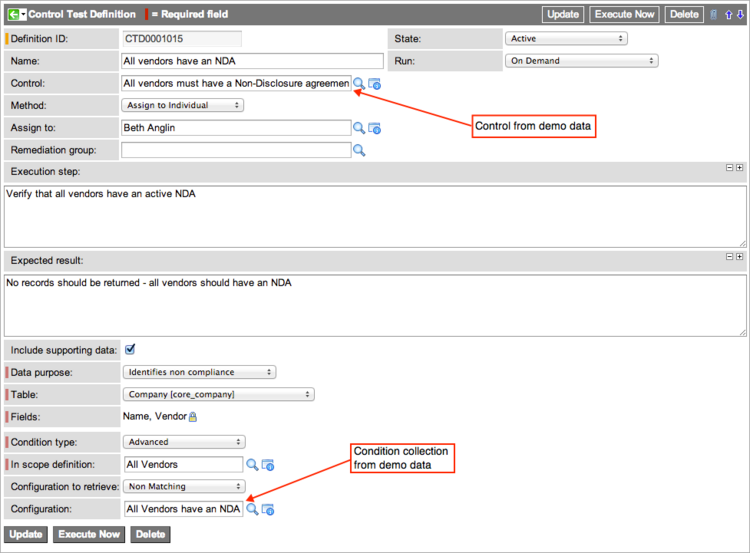
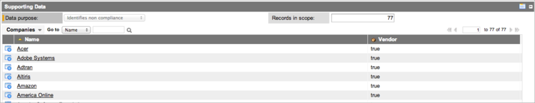
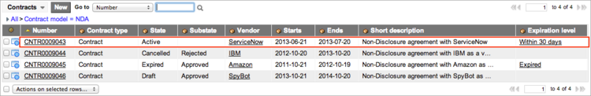

Auditing Vendor Non-Disclosure Agreements
| |
Note: This article applies to Fuji. For more current information, see Run the GRC Vendor Audit - Legacy at http://docs.servicenow.com
The Wiki page is no longer being updated. Please refer to http://docs.servicenow.com for the latest product documentation. |
Contents
1 Overview
ServiceNow provides records with Governance, Risk, and Compliance (GRC) that you can use to audit vendors for non-disclosure agreements (NDA) on a production system. The example shown here uses certification filters and templates in place of condition collections to illustrate how this can simplify configuration. The NDA records are available starting with the Dublin release.
2 Setup
Follow this process to understand how you can use records provided by ServiceNow to conduct vendor audits for NDAs based on certification filters and templates. The filter and template examples on this page are offered as an efficient alternative to the process normally used by GRC and require configuration. To make the filter and template work for this example, you must copy and reconfigure the control test definition record provided in the base system to use the template. The NDA Policy and NDA Control records are shown to familiarize you with the built-in data that ServiceNow provides to manage NDAs. Follow this flow to perform an NDA audit using records provided by ServiceNow:
- View the NDA Policy
- View the NDA Control
- Create a Certification Filter
- Create a Certification Template
- Modify the Control Test Definition
- Run the Vendor Audit
3 View the NDA Policy
Navigate to GRC > Policies and view the policy called Non-Disclosure Agreements (NDAs) are required for all vendors. All the necessary values for this record are provided. For additional information, see Managing GRC Policies.
{kind=link}
4 View the NDA Control
Navigate to GRC > Controls > All and view the control called All vendors must have a Non-Disclosure agreement. All the necessary values for this record are provided. For more information on controls, see Creating a Control.
{kind=link}
This control is accessible from the Controls related list in the NDA Policy form
{kind=link}
5 Create a Certification Filter
ServiceNow does not include an NDA filter for vendors with GRC. Create a filter for this purpose, using this procedure:
- Navigate to GRC > Administration > Filters.
- Click New.
- Name the filter All vendors.
- Select Company [core_company] as the table.
- Create a single condition that selects all vendors.
- [Vendor] [is] [true]
- This condition selects all records in the Company [core_company] table that are marked as vendors.
- 
- Fill in rest of the form as described on the Creating Filters page.
- Click Submit.
- ServiceNow creates version 1 of this filter, which marks it Active. A message in the Filter Condition field indicates that the condition contains 77 matching records.
{kind=link}
6 Create a Certification Template
After you create the filter that identifies the vendor records to audit, create a template that sets the audit conditions. ServiceNow looks in the Contract [ast_contract] table for all vendors that have the NDA contract model.
- Navigate to GRC > Administration > Templates.
- Click New.
- The Audit type field is read-only and is preset to Compliance. All templates created from within Governance Risk and Compliance use this audit type.
- In the the Name field, enter Vendors with an NDA.
- Select the All vendors filter you created in the previous section.
- The condition builders appear. All conditions are [and] conditions.
- In Certification Related List Conditions, create these conditions on the Contract [ast_contract] table:
- [Contract->Vendor] [State] [is] [Active]: Selects all vendors with an active contract.
- [Contract->Vendor] [Contract model] [is] [NDA]: Selects all vendors with an NDA contract.
- For more information about completing the template form, see Creating Templates.
- 
- Click Submit.
{kind=link}
7 Modify the Control Test Definition
Copy the existing control test definition provided by ServiceNow and replace the condition collection with the certification filter and template you created in the previous procedures.
- Navigate to GRC > Administration > Control Test Definitions.
- Select the All vendors have an NDA record.
- Right-click the header bar and select Insert and Stay from the context menu.
- This action saves a copy of the control test definition record.
- Change the name of this record to All vendors have an NDA (template) to differentiate it from the provided version.
- This record uses a condition collection, specified in the Configuration field, called All Vendors have an NDA.
- 
- In the Condition type field, select Template.
- The system displays the Template field and hides the fields used for condition collections. The Configuration to retrieve is preset to Non Matching, which returns a list of vendors who do not have active non-disclosure agreements.
- In the Template field, select the active version of Vendors with an NDA.
- Click Update.
- The system is now configured for a GRC audit of vendors who do not have active contracts with non-disclosure agreements.
{kind=link}
{kind=link}
8 Run the Vendor Audit
You are ready to conduct the audit.
- Navigate to GRC > Administration > Control Test Definitions.
- Select the All vendors have an NDA (template) record.
- Click Execute Now.
- The Control Test Definitions list appears.
- Reopen the same record.
- In the Control Test Instances related list, open the test instance you just created.
- Scroll down to the Supporting Data section.
- The in scope records for this audit of the Company [core_company] table were the 78 companies in the demo data defined as vendors. Of these 78, the audit returned 77 that did not match the template conditions.
- 
- Three of these 77 vendors did have an NDA contract, but the contracts were inactive, making them non-matching. ServiceNow matched the template conditions with only one active NDA contract that was not retrieved in the audit. Had you selected Matching in the Configuration to retrieve field of the control test definition, the support data would have shown only one matching vendor.
- 
{kind=link}
{kind=link}